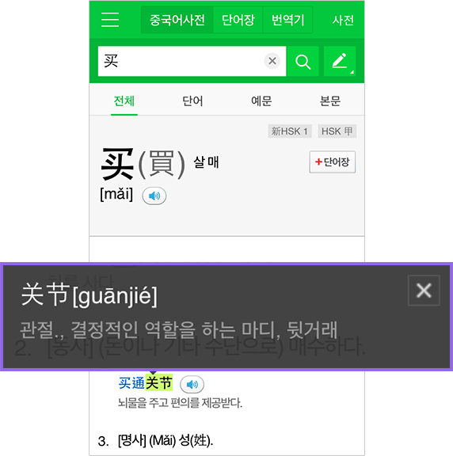

	<div class="intru_hw">
		<h2 class="intru_h2">보조사전 기능</h2>
		<p class="intru_p">뜻풀이에서 모르는 중국어 단어가 나오면 보조사전으로 간편하게 확인하실 수 있습니다.</p>
	</div>
	<ul class="intru_lstw">
	<li class="intru_lst">
		<p class="intru_p">모르는 글자를 누르면, 선택한 글자가 강조 표시되면서 해당 중국어 뜻이 화면에 표시됩니다.</p>
		 </li>
	</ul>
	<div class="intru_p2">보조사전은 모바일 기기 환경에 따라 동작하지 않을 수 있습니다.</div>
